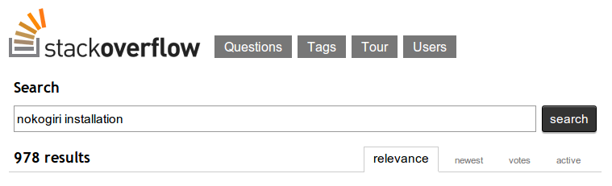

Nokogiri:
History of a Gem
A valid and well-formed talk on an open-source success
Mike Dalessio / @flavorjones
mike.daless.io / blog.flavorjon.es
GoGaRuCo 2013
FAQ
- What is Nokogirl?
$ gem install nokogirl
Building native extensions. This could take a while...
It's actually spelled nokogiri, not nokogirl
Successfully installed nokogiri-1.6.0
Successfully installed nokogirl-1.0
2 gems installed
FAQ
- What is Nokogirl?
- What is Nokogiri?
A Ruby API for XML/HTML parsing and manipulation.
FAQ
- What is Nokogirl?
- What is Nokogiri?
- OMG, isn't that boring?
I hate XML.
But I ❤ making painful things not-painful.
Nokogiri has been downloaded 14.8 million times.
(Rails has 27.6 million downloads, Formtastic has 1.7 million.)
If Rails is

And Formtastic is

So yes, Nokogiri does one boring thing.
But it does it well, and people seem to like it.
And that makes me happy.
FAQ
- What is Nokogirl?
- What is Nokogiri?
- OMG, isn't that boring?
- What does "Nokogiri" mean?
鋸
FAQ
- What is Nokogirl?
- What is Nokogiri?
- OMG, isn't that boring?
- What does "Nokogiri" mean?
- I can't install Nokogiri on Mac OSX 10.8.4 running MacPorts.
“There's an old saying about those who forget history. I don't remember it, but it's good.”
— Stephen Colbert
2006
- Ruby 1.8.5 and Rails 1.1.6 are released.
- Ruby core moves from CVS to SVN.
- NASA launches the New Horizons spaceprobe, destined for the planet Pluto.
- IAU redefines "planet" and Pluto is declared not-a-planet. :(
- Googling for "aaron patterson" revealed ...
Ruby HTML/XML Parsers in 2006
- REXML is in the stdlib, but is sloooooooooow and doesn't fix broken markup.
- Hpricot is the de facto standard for XML/HTML parsing.
- libxml-ruby is a close runner-up.
Scraping HTML with Mechanize.
Scraping super-secret HTML with Mechanize.
Problem: Needed support for client-side certificates.
Solution: Emailed a patch to @tenderlove
My First ✌Pull request✌
@tenderlove was open and kind and responsive.
I sent more patches.
I got commit privileges.
I kept contributing.
2008
- Ruby 1.8.7 and Rails 2.1 are released.
- 'Slumdog Millionaire' and 'Wall-E' in theaters.
- LHC goes online.
- Oil hits $100/barrel for the first time.
- Stock markets crash. (Thanks, subprime lenders.)
Scraping HTML with Mechanize.
Scraping broken HTML with Mechanize.
(@flavorjones, in full Github-stalker mode)
You're working on an XML wrapper, right? Do you have any thoughts on how useful libxml2 would be with malformed HTML? For me, this was actually the killer feature of Hpricot -- it manages to un-mangle HTML really well ... There's a lot of malformed HTML out there.
(@tenderlove, being indulgent)
Awesome! Yes. Libxml actually handles broken HTML better than hpricot does. I have test cases for which libxml will handle broken html better than hpricot.
I've submitted those test cases as bugs for hpricot as well. I would have patched hpricot, but it is too hard for me to read!
How can I help out?
I've started a project called 'nokogiri' which is my libxml wrapper. There is no C, it uses DL exclusively.
Dynamic Language binding.
Call C libraries without writing C code.
# lib/nokogiri/dl/xml.rb
module Nokogiri
module DL
module XML
extend ::DL::Importer
dlload('libxml2.so') rescue dlload('libxml2.dylib')
extern "void * xmlReadMemory (const char *, int, const char *,
const char *, int)"
...
end
end
end
# lib/nokogiri/xml.rb
module Nokogiri
module XML
class << self
def parse(string, url = nil, encoding = nil, options = 1)
Document.wrap(NokogiriLib::XML.xmlReadMemory(
string, string.length,
(url || 0),
(encoding || 0),
options
))
end
end
end
end
DL was slow. Really slow.
We killed it and started writing a C extension to call libxml2 directly.
static VALUE read_memory( VALUE klass,
VALUE string,
VALUE url,
VALUE encoding,
VALUE options )
{
const char * c_buffer = StringValuePtr(string);
const char * c_url = NIL_P(url) ? NULL : StringValuePtr(url);
const char * c_enc = NIL_P(encoding) ? NULL : StringValuePtr(encoding);
int len = (int)RSTRING_LEN(string);
xmlDocPtr doc;
...
doc = xmlReadMemory(c_buffer, len, c_url, c_enc, (int)NUM2INT(options));
...
}
The toughest problem we encountered writing Nokogiri:
Discovering and debugging libxml2's memory management.
Attributes and Namespaces have strings in the original document's dictionary.
What happens when you move a Node to another Document, then GC the first Doc?
Fun fact: libxml2 merges string nodes if they're next to each other.
What happens to the Ruby object pointing to a non-existent C object?
Actual comment explaining some insane memory-management logic:
/*
* if the reparentee is a text node, there's a very good chance it
* will be merged with an adjacent text node after being reparented,
* and in that case libxml will free the underlying C struct.
*
* since we clearly have a ruby object which references the underlying
* memory, we can't let the C struct get freed. let's pickle the original
* reparentee by rooting it; and then we'll reparent a duplicate of the
* node that we don't care about preserving.
*
* alternatively, if the reparentee is from a different document than the
* pivot node, libxml2 is going to get confused about which document's
* "dictionary" the node's strings belong to (this is an otherwise
* uninteresting libxml2 implementation detail). as a result, we cannot
* reparent the actual reparentee, so we reparent a duplicate.
*/
Different versions of libxml2 have different fun bugs in how they merge (or don't merge) nodes.
PAIN.
Writing and Debugging C Extensions
In conclusion, learn these tools!
valgrindto find unsafe memory ops and memory leaksperftools.rbfor looking at performance bottlenecks
API Design
We boldly stole the best XML API we could find ...
API Design by Theft
Hpricot's API.
The first few versions of Nokogiri had an Hpricot-compatible API module.
First official release
on November 17, 2008.
(DST weekend.)
Community response
Mixed.
But
People liked to argue a lot about XML library benchmarks in 2008.
And people loved Hpricot.
Lots of people had opinions on benchmarks:
Here are some BS benchmarks:
For an html snippet 2374 bytes long ...
user system total real
regex * 1000 0.160000 0.010000 0.170000 ( 0.182207)
nokogiri * 1000 1.440000 0.060000 1.500000 ( 1.537546)
hpricot * 1000 5.740000 0.650000 6.390000 ( 6.401207)
it took an average of 0.0015 seconds for Nokogiri
it took an average of 0.0064 seconds for Hpricot
For an html snippet 97517 bytes long ...
user system total real
regex * 10 0.100000 0.020000 0.120000 ( 0.122117)
nokogiri * 10 0.310000 0.020000 0.330000 ( 0.322290)
hpricot * 10 3.190000 0.300000 3.490000 ( 3.502819)
it took an average of 0.0322 seconds for Nokogiri
it took an average of 0.3503 seconds for Hpricot
In retrospect, largely pointless, other than driving us to fix bottlenecks more quickly.
<tangent class="personal">
Late 2008, I was introduced to Pivotal Labs by a fan of Nokogiri.
I was hired largely on the basis of my open-source work.
"I can't imagine hiring someone that I didn't know through open source."
"Open source is your farm system. Use it!"
Pivotal regularly receives applications without a link to a GitHub profile, or references to public or open-source work.
</tangent>
Then, in August 2009, this tweet:

The Dawn of JRuby
Show of hands, please.
- Ruby (1.8.6 .. 2.0.0)
- JRuby
- Rubinius
- IronRuby? Other?
2009 Fact:
JRuby didn't fully support the C extension API.
This was a problem for JRubyists who wanted to use Nokogiri.
I had a dream
One codebase that ran on MRI, Rubinius and JRuby.
My FFI Phase
Foreign Function Interface
Ruby calling native C code directly.
attach_function :xmlReadMemory,
[:string, :int, :string, :string, :int],
:pointer
...
module Nokogiri
module XML
class Document < Node
def self.read_memory(string, url, encoding, options)
wrap_with_error_handling do
LibXML.xmlReadMemory(string, string.length, url, encoding, options)
end
end
end
end
end
Shout out to Wayne Meissner (@wmeissner).
I spent January to May 2009 doing this.
Meaningful Statistic
It took 3,049 lines of Ruby/FFI code
to reproduce 4,150 lines of C code.
PAIN:
Writing C in Ruby
PAIN:
"Segfault-driven development"
Development was handicapped by lack of compile-time checking.
PAIN:
Portable string handling is hard.
JVM GC edge cases.
PAIN:
FFI code not any clearer than C.
Requires you think in C and translate to Ruby.
I DO NOT WANT
PAIN:
Big performance penalty.
Though FFI is reportedly much faster these days, serializing data and calling through the FFI stack is always going to be slower than a native function call.
PAIN:
"Harassment-driven development"
Let me tell you a story about RubyConf 2009.
FFI Lessons
- If you care about performance, you need to write native extensions
- If you care about multi-platform, you need to support at least two codebases
- If you don't care about either, then FFI is for you!
FFI Lessons
- If you care about performance, you need to write native extensions
- If you care about multi-platform, you need to support at least two codebases
- If you don't care about either, then FFI is for you!
FFI Lessons
- If you care about performance, you need to write native extensions
- If you care about multi-platform, you need to support at least two codebases
- If you don't care about either, then FFI is for you!
All these choices suck.

Outcomes
- Killed the FFI port.
- Unpublished blog post.
- :`(
"Portability is for people who cannot write new programs."
— Linus Torvalds
Enter Sergio
Sergio Arbeo (@serabe).
Spanish college student.
Spiked on a pure-Java port over GSOC 2009.
It (mostly) worked.
Ruby Bounty
A Ruby Bounty was created to finish up a pure-Java port, using Xerces and NekoHTML.
$625 was the largest Bounty ever at the time.
The Money Men
Ruby Bounty contributors:
- Aaron Patterson (@tenderlove)
- Mike Dalessio (@flavorjones)
- Darrin Eden (@dje)
- Charles Nutter (@headius)
- Tony Arcieri (@tarcieri)
- Sergio Arbeo (@serabe)
- Roger Pack (@rdp)
Awesome people took it across the finish line
Ruby Bounty winners:
- Pat Mahoney (@pmahoney)
- Yoko Harada (@yokolet)
- Charles Nutter (@headius)
- Sergio Arbeo (@serabe)
Meaningless Statistic
$ sloccount ext lib
Totals grouped by language
(dominant language first):
java: 9206 (50.72%)
ansic: 4758 (26.22%)
ruby: 3932 (21.67%)
yacc: 253 (1.39%)
Meaningless Statistic

Meaningful Statistic
For a flavor of the zeitgeist, check out this awesome ruby-talk thread
Three general opinions expressed:
- Do it in pure Ruby and fix the implementations' performance problems! ✘ See REXML!
- Do it with FFI! ✘ Threw it away!
- Do it native! ✔ ← THIS.
Installation
FAQ
- What is Nokogirl?
- What is Nokogiri?
- OMG, isn't that boring?
- What does "Nokogiri" mean?
- I can't install Nokogiri on Mac OSX 10.8.4 running MacPorts.
FAQ
- What is Nokogirl?
- What is Nokogiri?
- OMG, isn't that boring?
- What does "Nokogiri" mean?
- I can't install Nokogiri on X running Y.
Hard for different reasons on different platforms.
But, basically: dependencies.
Let's do this in chronological order:
- Windows
- JRuby
- Everybody else
Windows Problems
Nobody has a build toolchain.
Nobody has libxml2 installed on their system.
Installation solution
Cross-compile and package DLLs with the gem:
- libxml2
- libxslt
- libiconv
- zlib
"Fat Binary" Gems
$ ls -l gems
total 21652
-rw-r--r-- 1 miked 9870336 Mar 11 17:31 nokogiri-1.5.7-x86-mingw32.gem
-rw-r--r-- 1 miked 9870336 Mar 11 17:31 nokogiri-1.5.7-x86-mswin32-60.gem
-rw-r--r-- 1 miked 221184 Mar 11 17:31 nokogiri-1.5.7.gem
Fat because we have to compile against multiple rubies:
- Ruby 1.8.7
- Ruby 1.9.3
- Ruby 2.0 (as of nokogiri 1.5.7)
Windows Support
Luis Lavena (@luislavena) supports the Windows build toolchain basically single-handedly.
rake-compiler- builds native extensions n*mini_portile- builds autoconf packages- infinite patience
He rules!
Show of hands
Any Ruby Windows developers out there?
We could use some Windows peeps to help support the platform.
Tweet me, maybe: @flavorjones
JRuby Problems
Nokogiri's JRuby port uses specific libraries:
isorelaxjingnekodtdandnekohtmlxerces
These may not be installed on the target system.
Installation solution
Build and package jar files!
$ ls lib/*jar
lib/isorelax.jar
lib/jing.jar
lib/nekodtd.jar
lib/nekohtml.jar
lib/xercesImpl.jar
The JRuby gem is also a "Fat Binary"
$ ls -l gems
total 21652
-rw-r--r-- 1 miked 2204160 Mar 11 17:31 nokogiri-1.5.7-java.gem
-rw-r--r-- 1 miked 9870336 Mar 11 17:31 nokogiri-1.5.7-x86-mingw32.gem
-rw-r--r-- 1 miked 9870336 Mar 11 17:31 nokogiri-1.5.7-x86-mswin32-60.gem
-rw-r--r-- 1 miked 221184 Mar 11 17:31 nokogiri-1.5.7.gem
MRI Problems
Unlike most C extensions, we have unwieldy external dependencies:
- libxml2
- libxslt
LAME.
- everyone has different libxml2 versions installed
- ... in different places
- ... with different (possibly buggy) behavior
PAIN:
FOR YOU

PAIN:
FOR ME
int is_2_6_16(void)
{
return (strcmp(xmlParserVersion, "20616") <= 0) ? 1 : 0 ;
}
if ( reparentee->type == XML_TEXT_NODE
&& pivot->type == XML_TEXT_NODE
&& is_2_6_16(
) {
/* work around a string-handling bug in libxml 2.6.16.
we'd rather leak than segfault. */
pivot->content = xmlStrdup(pivot->content);
}
libxml 2.9.x
Currently the default for homebrew.
Xpath query bug breaks CSS queries.
(This was very recently fixed.)
"Wait."
"Didn't you just say that mini_portile will compile autoconf
projects and bind to them at gem installation time?"
Nokogiri 1.6.0

Packages libxml2 and libxslt inside the gem.
Good For You
Installation Just Works™.
(You can still use your system libraries if you really want to.)
Good For Me
I can lock Nokogiri's logic to a specific version of libxml2, lowering support and testing burden.
"Fat Source"
Naming Things is Easy!
The Future
Nokogiri 2.0 roadmap up at github.com/sparklemotion/nokogiri
2.0 Roadmap Highlights
Improving APIs:
- better serialization / pretty-printing
- better
Nodeattributes API - CSS query parsing (pseudo-selectors and JQuery compat)
- better custom XPath handler API
2.0 Roadmap Highlights
Addressing architectural issues:
- faster SAX parsing (see the fairy-wing throwdown)
DocumentFragmentboogsReader- general encoding improvement
Call To Action
Call to Action, Part I
If you're a Windows MRI user,
Get involved.
Demonstrate to gem maintainers that Windows MRI is worth supporting.
Call to Action, Part II
If you aren't already,
Contribute to open-source.
Start small. Iterate. Get lots of small wins. Make friends. Get a better job.
Nokogiri does one boring thing, but does it well.
You are annoyed by something small and boring somewhere. Go fix it.
Scratch your itch. Make the world a better place.
And get to hang out with @tenderlove.